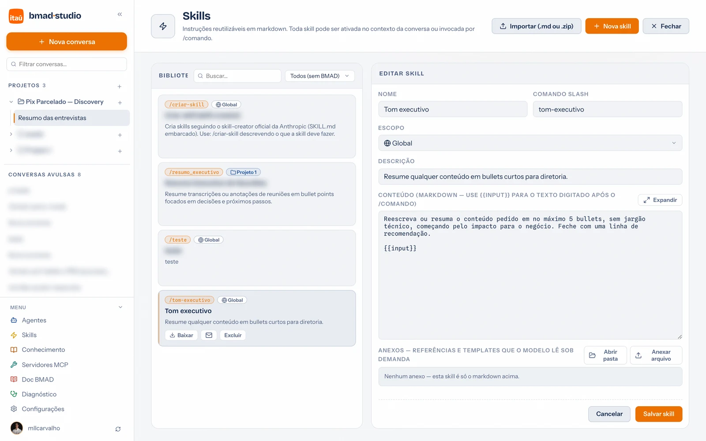

Guia de uso · 05
Skills
Uma skill é uma instrução reutilizável — um jeito de escrever, um checklist, um template de documento. Você escreve uma vez e usa em qualquer conversa como comando slash, ou deixa o assistente carregá-la sozinho quando o pedido combina com a descrição.

Como criar
- Menu da sidebar → Skills → + Nova skill.
- Nome — curto e descritivo (ex.: "Tom executivo"). O comando slash é derivado dele (
/tom-executivo), mas dá para personalizar. - Escopo — Global vale em qualquer conversa; Projeto só nas conversas daquele projeto.
- Descrição — capriche: é por ela que o assistente decide carregar a skill sozinho quando o pedido do usuário combina. "Resume qualquer conteúdo em bullets para diretoria" funciona; "skill de resumo" não.
- Conteúdo — markdown simples com as instruções. Use
{{input}}onde o texto digitado após o comando deve entrar:
Reescreva ou resuma o conteúdo pedido em no máximo 5 bullets,
sem jargão técnico, começando pelo impacto para o negócio.
Feche com uma linha de recomendação.
{{input}}
Anexos: a skill é uma pasta
Cada skill pode carregar arquivos junto — templates, exemplos, referências. No editor da
skill, envie os anexos; o assistente os lê quando precisa (ferramenta
portal_read_skill_file). Um template de PRD anexado à skill
/prd-resumido, por exemplo, garante que o documento saia sempre no formato da casa.
Como usar na conversa
- Comando slash: digite
/no campo de mensagem — o menu lista os comandos disponíveis./tom-executivo cole aqui o texto…aplica a skill àquela mensagem. - Carregamento automático: as demais skills ficam num catálogo leve que o assistente consulta — quando o seu pedido combina com a descrição de uma, ele a carrega sozinho antes de responder.
- Vinculada a um agente: skills vinculadas (na edição do agente) entram ativas em todas as conversas daquele agente.
Exportar, enviar por e-mail e importar
Cada skill na lista tem três ações de compartilhamento:
- Exportar — baixa a skill como
.skill.zip(SKILL.md + anexos). Sem anexos, um.mdsimples resolve. - Enviar por e-mail (ícone ✉️) — abre seu cliente de e-mail com o arquivo já anexado, pronto para mandar ao time. Sem cliente com anexo automático? O portal salva o arquivo e abre a pasta para anexar à mão.
- Importar (.md ou .zip) — no topo da página. Aceita vários arquivos de uma vez e cria as skills direto. Reimportar atualiza a skill existente em vez de duplicar — mande a versão nova pelo mesmo caminho.
Skills do BMAD
Os workflows do BMAD Method (/bmad-*) aparecem na página como skills — são
registrados pela integração e atualizados com ela. Dá para filtrá-los pela aba "BMAD" e
usá-los como qualquer comando; para o método em si, veja BMAD Method.